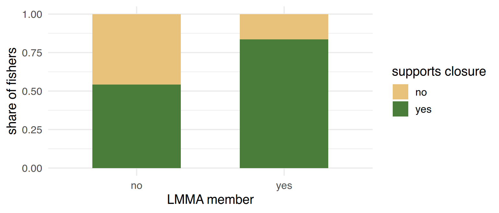

binom.test());prop.test() and report the difference with its CI;binom.test()) ;prop.test() et rapporter la différence avec son IC ;Data of this session. The fisher
survey (fisher_survey.csv, Session 0: 240 fishers,
60 drawn at random in each of 4 villages, 2026) and the octopus
landings (octopus_catch.csv, Session 3: every
octopus landed on reopening day in two villages). With categorical
variables, the data are counts of units in each
category; each unit (fisher, octopus) must be counted
once and be independent of the others.
Données de cette séance. L’enquête
pêcheurs (fisher_survey.csv, séance 0 : 240
pêcheurs, 60 tirés au hasard dans chacun des 4 villages, 2026) et les
débarquements de pieuvres
(octopus_catch.csv, séance 3 : toutes les pieuvres
débarquées le jour de réouverture dans deux villages). Avec des
variables catégorielles, les données sont des effectifs
d’unités dans chaque catégorie ; chaque unité (pêcheur, pieuvre) doit
être comptée une seule fois et être indépendante des
autres.
The LMMA committee says closures need the support of more than two thirds of fishers to be respected. In the sample, what share supports them, and is it different from 2/3?
Le comité de la LMMA estime que les fermetures ont besoin du soutien de plus des deux tiers des pêcheurs pour être respectées. Dans l’échantillon, quelle part les soutient, et est-elle différente de 2/3 ?
fs <- read.csv("data/fisher_survey.csv")
x <- sum(fs$supports_closure == "yes"); n <- nrow(fs)
c(x = x, n = n, p_hat = round(x / n, 3))#> x n p_hat
#> 155.000 240.000 0.646#>
#> Exact binomial test
#>
#> data: x and n
#> number of successes = 155, number of trials = 240, p-value = 0.4941
#> alternative hypothesis: true probability of success is not equal to 0.6666667
#> 95 percent confidence interval:
#> 0.5817306 0.7062834
#> sample estimates:
#> probability of success
#> 0.6458333Functions and arguments used here
| Function / argument | What it does | Value it expects |
|---|---|---|
binom.test(x, n, p, alternative) |
exact test of H0: the true proportion = p, with the
exact 95 % CI (Session 5) |
|
p |
the reference proportion under H0 | between 0 and 1 (default 0.5) |
Fonctions et arguments utilisés ici
| Fonction / argument | Ce qu’il fait | Valeur attendue |
|---|---|---|
binom.test(x, n, p, alternative) |
test exact de H0 : la vraie proportion = p, avec l’IC
exact à 95 % (séance 5) |
|
p |
la proportion de référence sous H0 | entre 0 et 1 (défaut 0,5) |
65 % support closures (95 % CI 58–71 %). The CI contains 2/3 (67 %): no evidence that support differs from two thirds — but the data are also compatible with a support as low as 58 %, which the committee should know.
65 % soutiennent les fermetures (IC 95 % 58–71 %). L’IC contient 2/3 (67 %) : pas de preuve que le soutien diffère des deux tiers — mais les données sont aussi compatibles avec un soutien aussi bas que 58 %, ce que le comité devrait savoir.
For more than two categories, the χ² (chi-square) test compares observed counts O with the counts expected under H0, E: χ² = Σ (O − E)² / E. Large χ² → observed far from expected.
Example: is the sex ratio of landed octopuses 1 : 1?
Pour plus de deux catégories, le test du χ² (khi-deux) compare les effectifs observés O aux effectifs attendus sous H0, E : χ² = Σ (O − E)² / E. χ² grand → observé loin de l’attendu.
Exemple : le sex-ratio des pieuvres débarquées est-il de 1 : 1 ?
#>
#> F M
#> 175 170#>
#> Chi-squared test for given probabilities
#>
#> data: obs
#> X-squared = 0.072464, df = 1, p-value = 0.7878#> F M
#> 172.5 172.5And the perceived trend of catches: national surveys report that about 60 % of fishers say catches have decreased, 30 % stable and 10 % increased. Do our villages differ?
Et la tendance perçue des captures : des enquêtes nationales rapportent qu’environ 60 % des pêcheurs disent que les captures ont diminué, 30 % stables et 10 % augmenté. Nos villages diffèrent-ils ?
#>
#> decreased stable increased
#> 164 57 19#>
#> Chi-squared test for given probabilities
#>
#> data: trend
#> X-squared = 6.9444, df = 2, p-value = 0.03105Functions and arguments used here
| Function / argument | What it does | Value it expects |
|---|---|---|
chisq.test(x, p) |
with one table of counts: goodness-of-fit test
against the proportions p |
|
p |
expected proportions, in the same order as the categories of the table; they must sum to 1 | a numeric vector (default: all equal) |
$expected |
the expected counts E under H0 |
Fonctions et arguments utilisés ici
| Fonction / argument | Ce qu’il fait | Valeur attendue |
|---|---|---|
chisq.test(x, p) |
avec un tableau d’effectifs : test d’ajustement aux
proportions p |
|
p |
proportions attendues, dans le même ordre que les catégories du tableau ; leur somme doit valoir 1 | un vecteur numérique (défaut : toutes égales) |
$expected |
les effectifs attendus E sous H0 |
Are undersized octopuses (< 350 g) less frequent in the reopened
area? prop.test() takes the number of
“successes” and the number of trials of each
group.
Les pieuvres trop petites (< 350 g) sont-elles moins fréquentes
dans la zone rouverte ? prop.test() prend le nombre
de « succès » et le nombre d’essais de chaque
groupe.
small <- tapply(oc$weight_g < 350, oc$area, sum)
total <- table(oc$area)
rbind(small = small, total = total, prop = round(small / total, 3))#> open reopened
#> small 25.000 10.000
#> total 160.000 185.000
#> prop 0.156 0.054#>
#> 2-sample test for equality of proportions with continuity correction
#>
#> data: small out of total
#> X-squared = 8.7408, df = 1, p-value = 0.003112
#> alternative hypothesis: two.sided
#> 95 percent confidence interval:
#> 0.03135281 0.17303908
#> sample estimates:
#> prop 1 prop 2
#> 0.15625000 0.05405405Functions and arguments used here
| Function / argument | What it does | Value it expects |
|---|---|---|
prop.test(x, n, correct) |
with vectors: compares the proportions x/n of 2 (or
more) groups; gives the CI of the difference for 2
groups |
x successes and n totals, in the same
order |
Fonctions et arguments utilisés ici
| Fonction / argument | Ce qu’il fait | Valeur attendue |
|---|---|---|
prop.test(x, n, correct) |
avec des vecteurs : compare les proportions x/n de 2
groupes (ou plus) ; donne l’IC de la différence pour 2
groupes |
x succès et n totaux, dans le même
ordre |
Report: “Undersized octopuses made up 15.6 % of the catch in the open area and 5.4 % in the reopened area (difference 10.2 percentage points, 95 % CI 3.1–17.3; χ² test, χ² = 8.74, df = 1, p = 0.003).”
Rédaction : « Les pieuvres sous la taille représentaient 15,6 % des captures dans la zone ouverte et 5,4 % dans la zone rouverte (différence de 10,2 points de pourcentage, IC 95 % 3,1–17,3 ; test du χ², χ² = 8,74, ddl = 1, p = 0,003). »
Is support for closures associated with LMMA membership? H0: the two variables are independent (the % of supporters is the same among members and non-members). Expected count of each cell under H0 = row total × column total / grand total.
Le soutien aux fermetures est-il associé à l’adhésion à la LMMA ? H0 : les deux variables sont indépendantes (le % de partisans est le même chez les membres et les non-membres). Effectif attendu de chaque case sous H0 = total de ligne × total de colonne / total général.
#> supports
#> member no yes
#> no 71 84
#> yes 14 71#> supports
#> member no yes
#> no 45.8 54.2
#> yes 16.5 83.5#>
#> Pearson's Chi-squared test with Yates' continuity correction
#>
#> data: tab
#> X-squared = 19.392, df = 1, p-value = 1.065e-05#> supports
#> member no yes
#> no 54.89583 100.10417
#> yes 30.10417 54.89583#> supports
#> member no yes
#> no 4.54 -4.54
#> yes -4.54 4.54ggplot(fs, aes(lmma_member, fill = supports_closure)) +
geom_bar(position = "fill", width = 0.6) +
scale_fill_manual(values = c(no = "#e8c27a", yes = "#4a7d3a")) +
labs(x = "LMMA member", y = "share of fishers", fill = "supports closure") + theme_c()
Functions and arguments used here
| Function / argument | What it does | Value it expects |
|---|---|---|
table(name1 = a, name2 = b) |
two-way table; the names become the titles of the rows and columns | |
chisq.test(tab, correct) |
with a two-way table: test of independence; for 2 ×
2 tables, correct = TRUE (default) applies Yates’
continuity correction |
|
$stdres |
standardised residuals (O − E scaled): beyond ±2, the cell contributes clearly to the association |
Fonctions et arguments utilisés ici
| Fonction / argument | Ce qu’il fait | Valeur attendue |
|---|---|---|
table(name1 = a, name2 = b) |
tableau croisé ; les noms deviennent les titres des lignes et des colonnes | |
chisq.test(tab, correct) |
avec un tableau croisé : test d’indépendance ; pour
les tableaux 2 × 2, correct = TRUE (défaut) applique la
correction de continuité de Yates |
|
$stdres |
résidus standardisés (O − E mis à l’échelle) : au-delà de ±2, la case contribue nettement à l’association |
Conditions. (1) Each unit is counted once, units are independent. (2) Expected counts (not observed) should be ≥ 5 in (almost) all cells — R warns “Chi-squared approximation may be incorrect” otherwise. Then use Fisher’s exact test, or group rare categories if it makes sense.
Degrees of freedom = (rows − 1) × (columns − 1).
Conditions. (1) Chaque unité est comptée une fois, les unités sont indépendantes. (2) Les effectifs attendus (pas observés) doivent être ≥ 5 dans (presque) toutes les cases — sinon R avertit « Chi-squared approximation may be incorrect ». Utilisez alors le test exact de Fisher, ou regroupez des catégories rares si cela a du sens.
Degrés de liberté = (lignes − 1) × (colonnes − 1).
For a 2 × 2 table, fisher.test() gives the odds
ratio (OR) and its CI: the odds of supporting closures among
members divided by the odds among non-members (OR = 1: no association).
For larger tables, Cramér’s V = √(χ² / (n × (min(rows,
columns) − 1))) goes from 0 (no association) to 1.
Pour un tableau 2 × 2, fisher.test() donne
l’odds ratio (OR, rapport des cotes) et son IC : la
cote de soutien aux fermetures chez les membres divisée par la cote chez
les non-membres (OR = 1 : pas d’association). Pour des tableaux plus
grands, le V de Cramér = √(χ² / (n × (min(lignes,
colonnes) − 1))) va de 0 (pas d’association) à 1.
#>
#> Fisher's Exact Test for Count Data
#>
#> data: tab2
#> p-value = 4.866e-06
#> alternative hypothesis: true odds ratio is not equal to 1
#> 95 percent confidence interval:
#> 2.155822 8.909699
#> sample estimates:
#> odds ratio
#> 4.261454cramers_v <- function(tab) {
chi2 <- suppressWarnings(chisq.test(tab, correct = FALSE)$statistic)
as.numeric(sqrt(chi2 / (sum(tab) * (min(dim(tab)) - 1))))
}
cramers_v(tab)#> [1] 0.2933586Functions and arguments used here
| Function / argument | What it does | Value it expects |
|---|---|---|
fisher.test(tab) |
Fisher’s exact test of independence (any table size, best for small counts); for 2 × 2 tables also the odds ratio and its CI | a table of counts |
tab[c("yes", "no"), c("yes", "no")] |
reorders rows and columns; the odds ratio compares the 1st row with the 2nd, for the 1st column | |
suppressWarnings(expr) |
runs expr without printing its warnings (use only when
you know why they appear) |
|
dim(tab) |
number of rows and columns |
Fonctions et arguments utilisés ici
| Fonction / argument | Ce qu’il fait | Valeur attendue |
|---|---|---|
fisher.test(tab) |
test exact de Fisher d’indépendance (toute taille de tableau, idéal pour de petits effectifs) ; pour les tableaux 2 × 2 aussi l’odds ratio et son IC | un tableau d’effectifs |
tab[c("yes", "no"), c("yes", "no")] |
réordonne lignes et colonnes ; l’odds ratio compare la 1re ligne à la 2e, pour la 1re colonne | |
suppressWarnings(expr) |
exécute expr sans afficher ses avertissements
(seulement quand vous savez pourquoi ils apparaissent) |
|
dim(tab) |
nombre de lignes et de colonnes |
Association is not causation (Session 1): members may support closures because they are members, or join the LMMA because they already supported closures, or both may depend on a third variable (the village).
Association n’est pas causalité (séance 1) : les membres soutiennent peut-être les fermetures parce qu’ils sont membres, ou adhèrent à la LMMA parce qu’ils soutenaient déjà les fermetures, ou les deux dépendent d’une troisième variable (le village).
#>
#> no yes
#> F 3 3
#> M 4 26#>
#> no yes
#> F 1.166667 4.833333
#> M 5.833333 24.166667#> [1] 0.07327066With fisher_survey.csv (and
octopus_catch.csv for Q7):
binom.test()) of H0: p = 0.45
in these four villages. p-value (4 decimals).prop.test() (counts of hooks per area and totals per area).
p-value (4 decimals).Avec fisher_survey.csv (et
octopus_catch.csv pour Q7) :
binom.test()) de H0 :
p = 0,45 dans ces quatre villages. p-value (4 décimales).hook) entre les deux zones avec
prop.test() (effectifs de crochets par zone et totaux par
zone). p-value (4 décimales).Q2: chisq.test(table(fs$main_gear)) (equal proportions
are the default). Q7:
prop.test(tapply(oc$gear == "hook", oc$area, sum), table(oc$area)).
Q2 : chisq.test(table(fs$main_gear)) (les proportions
égales sont le défaut). Q7 :
prop.test(tapply(oc$gear == "hook", oc$area, sum), table(oc$area)).
fs <- read.csv("data/fisher_survey.csv")
binom.test(sum(fs$lmma_member == "yes"), nrow(fs), p = 0.45) # 1
chisq.test(table(fs$main_gear)) # 2
chisq.test(table(fs$village, fs$main_gear)) # 3, 4, 5
cramers_v <- function(tab) {
chi2 <- suppressWarnings(chisq.test(tab, correct = FALSE)$statistic)
as.numeric(sqrt(chi2 / (sum(tab) * (min(dim(tab)) - 1))))
}
cramers_v(table(fs$village, fs$lmma_member)) # 6
oc <- read.csv("data/octopus_catch.csv")
prop.test(tapply(oc$gear == "hook", oc$area, sum), table(oc$area)) # 7
# 8: expected counts < 5 9: pseudoreplication (not independent) 10: odds ~3.6 times higher